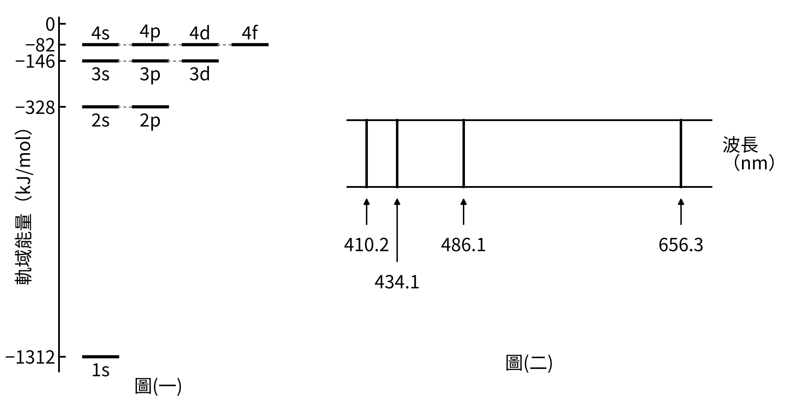

基礎題
下列電磁波依波長由短到長的排列順序，何者正確？
- (A) γ 射線＜X 射線＜紫外光＜可見光＜紅外光＜微波
- (B) X 射線＜γ 射線＜紫外光＜可見光＜微波＜紅外光
- (C) 微波＜紅外光＜可見光＜紫外光＜X 射線＜γ 射線
- (D) γ 射線＜紫外光＜X 射線＜可見光＜紅外光＜微波
- (E) 紫外光＜γ 射線＜X 射線＜可見光＜紅外光＜微波
看答案與詳解
答案：(A)
波長愈短，頻率愈高、光子能量愈大 → (A)
普朗克提出「能量只能一份一份地吸收或放出」的量子觀念，主要是為了解釋下列哪一種現象？
- (A) 原子核的存在
- (B) 黑體輻射
- (C) 光的繞射
- (D) 氫原子光譜
- (E) 電子的波動性
看答案與詳解
答案：(B)
光電效應由愛因斯坦（光子說）解釋；氫原子光譜由波耳模型解釋
愛因斯坦成功解釋光電效應，主要是基於下列哪一個觀念？
- (A) 光的粒子性（光子說）
- (B) 光的波動性
- (C) 物質波
- (D) 測不準原理
- (E) 電子的自旋
看答案與詳解
答案：(A)
以某單色光照射一金屬表面，並沒有光電子射出。下列哪一種做法最可能使光電子射出？
- (A) 增加光的強度
- (B) 延長照射的時間
- (C) 改用頻率較高的光
- (D) 改用波長較長的光
- (E) 增加金屬的表面積
看答案與詳解
答案：(C)
(A)(B)(E) ✘ 只增加光子數或時間，每個光子的能量不變
(C) ✔ 頻率提高，光子能量增大
(D) ✘ 波長變長，頻率變小，能量更低
波長 700 nm 的紅光與波長 400 nm 的紫光，一個紅光光子與一個紫光光子的能量比為何？
- (A) 7：4
- (B) 4：7
- (C) 1：1
- (D) 16：49
- (E) 49：16
看答案與詳解
答案：(B)
E紅：E紫＝(1／700)：(1／400)＝400：700＝4：7
故選 (B)
白光經三稜鏡分光後，得到由紅到紫連續不斷的色帶，此種光譜稱為？
- (A) 明線光譜
- (B) 暗線光譜
- (C) 連續光譜
- (D) 吸收光譜
- (E) 線光譜
看答案與詳解
答案：(C)
故選 (C)
氫原子光譜中，位於可見光區的是哪一個系列？
- (A) 來曼系列
- (B) 巴耳末系列
- (C) 帕申系列
- (D) 布拉克系列
- (E) 蒲芬德系列
看答案與詳解
答案：(B)
巴耳末（落回 n＝2）：可見光區（含部分近紫外）
帕申（n＝3）、布拉克（n＝4）以後：紅外光區
故選 (B)
氫原子光譜的巴耳末系列，是電子由較高能階落回第幾能階所放出的光？
- (A) n＝1
- (B) n＝2
- (C) n＝3
- (D) n＝4
- (E) n＝5
看答案與詳解
答案：(B)
〔口訣〕落回 1 紫外、落回 2 可見、落回 3 以上紅外
故選 (B)
下列各種電磁波中，何者的光子能量最大？
- (A) 紅光
- (B) 綠光
- (C) 紫外光
- (D) 紅外光
- (E) 微波
看答案與詳解
答案：(C)
波長：紫外光＜綠光＜紅光＜紅外光＜微波 → 紫外光能量最大
故選 (C)
頻率為 6.0×1014 Hz 的光，波長約為多少 nm？（c＝3.00×108 m/s）
- (A) 200
- (B) 300
- (C) 500
- (D) 600
- (E) 1800
看答案與詳解
答案：(C)
故選 (C)
下列哪一種光譜可以用來鑑定物質中所含的元素？
- (A) 白熾燈泡的連續光譜
- (B) 太陽光經三稜鏡後的彩色色帶
- (C) 元素原子受激發後的明線光譜
- (D) 彩虹
- (E) 以上皆不可
看答案與詳解
答案：(C)
連續光譜（白熾燈、陽光、彩虹）無法分辨元素
故選 (C)
下列哪些電磁波的頻率比可見光低？（多選）
- (A) 無線電波
- (B) 紫外光
- (C) 紅外光
- (D) X 射線
- (E) 微波
看答案與詳解
答案：(A)(C)(E)
(A) ✔ (C) ✔ (E) ✔ 波長都比可見光長
(B)(D) ✘ 波長比可見光短，頻率較高
某電臺的 FM 廣播頻率為 100 MHz，此電磁波的波長約為多少公尺？（1 MHz＝106 Hz，c＝3.00×108 m/s）
- (A) 0.30
- (B) 3.0
- (C) 30
- (D) 300
- (E) 3000
看答案與詳解
答案：(B)
〔易錯〕MHz 要先換成 Hz
故選 (B)
有關原子光譜，下列敘述哪些正確？（多選）
- (A) 氣態原子受熱或通電激發後放出的光，經分光後呈一條條亮線
- (B) 每一種元素的明線光譜都不相同，可用來鑑定元素
- (C) 白光通過低溫的鈉蒸氣後，在鈉的黃色明線（589 nm）位置會出現暗線
- (D) 原子的明線光譜是連續的色帶
- (E) 氫原子只有一個電子，所以光譜只有一條譜線
看答案與詳解
答案：(A)(B)(C)
(B) ✔ 各元素能階不同，譜線位置像指紋
(C) ✔ 原子吸收的光，與它放出的光對應相同的能階差
(D) ✘ 線光譜是不連續的亮線
(E) ✘ 大量氫原子中的電子在許多能階間躍遷，譜線有很多條
有關光的本質，下列敘述哪些正確？（多選）
- (A) 光的干涉與繞射現象顯示光具有波動性
- (B) 光電效應顯示光具有粒子性
- (C) 光在真空中的速率與其頻率有關
- (D) 同一束光的強度增加時，每個光子的能量也增加
- (E) 光同時具有波動性與粒子性
看答案與詳解
答案：(A)(B)(E)
(B) ✔
(C) ✘ 真空中所有電磁波速率都是 3.00×108 m/s
(D) ✘ 強度只代表光子數目，單一光子能量由頻率決定
(E) ✔ 波粒二象性
有關波長 300 nm 的光，下列敘述哪些正確？（h＝6.63×10−34 J·s，c＝3.00×108 m/s，NA＝6.02×1023）（多選）
- (A) 頻率為 1.0×1015 Hz
- (B) 屬於紫外光
- (C) 每個光子的能量為 6.63×10−19 J
- (D) 每莫耳光子的能量約為 200 kJ
- (E) 其光子能量為波長 600 nm 光子能量的一半
看答案與詳解
答案：(A)(B)(C)
(B) ✔ 可見光約 400～700 nm，300 nm 比紫光還短，屬紫外光
(C) ✔ E＝hν＝6.63×10−34×1.0×1015＝6.63×10−19 J
(D) ✘ 每莫耳＝6.63×10−19×6.02×1023≒3.99×105 J≒399 kJ（或 1.20×105÷300≒400 kJ）
(E) ✘ E 與 λ 成反比，波長一半能量為兩倍
進階題
氫原子中電子的下列躍遷，何者放出的光位於可見光區？
- (A) n＝2 → n＝1
- (B) n＝5 → n＝2
- (C) n＝5 → n＝3
- (D) n＝1 → n＝3
- (E) n＝6 → n＝4
看答案與詳解
答案：(B)
(A) 來曼，紫外光 (C) 帕申、(E) 布拉克，紅外光
(D) 由低能階到高能階是吸收能量，不放光
故選 (B)
每莫耳光子能量為 300 kJ 的光，波長約為多少 nm？（每莫耳光子能量 E（kJ）＝1.20×105／λ（nm））
- (A) 200
- (B) 300
- (C) 400
- (D) 500
- (E) 600
看答案與詳解
答案：(C)
故選 (C)
某氣體分子只吸收頻率為 2.0×1011 Hz、5.0×1013 Hz 與 1.2×1015 Hz 的電磁波。此氣體看起來無色，最合理的解釋為何？（c＝3.00×108 m/s）
- (A) 此氣體吸收了全部的可見光
- (B) 此氣體只吸收紫外光
- (C) 此氣體只吸收紅外光
- (D) 此氣體吸收的電磁波都不在可見光區
- (E) 此氣體只吸收可見光中的紅光
看答案與詳解
答案：(D)
2.0×1011 Hz → 1.5×10−3 m＝1.5 mm（微波）
5.0×1013 Hz → 6.0×10−6 m＝6000 nm（紅外光）
1.2×1015 Hz → 2.5×10−7 m＝250 nm（紫外光）
三者都不在 400～700 nm，可見光完全不被吸收 → 無色 (D)
O2 的鍵能為 498 kJ/mol。若每個光子只能使一個 O2 分子解離，則能使 O2 解離的光，波長最長約為多少 nm？（每莫耳光子能量 E（kJ）＝1.20×105／λ（nm））
- (A) 120
- (B) 241
- (C) 361
- (D) 482
- (E) 600
看答案與詳解
答案：(B)
λ≦1.20×105÷498≒241 nm
波長愈長能量愈低，所以 241 nm 是可解離的最長波長
故選 (B)
有關光電效應，下列敘述哪些正確？（多選）
- (A) 光的頻率高於金屬的底限頻率時，才能打出光電子
- (B) 光的頻率低於底限頻率時，照射再久也不會打出電子
- (C) 頻率高於底限時，光愈強，單位時間打出的光電子愈多
- (D) 光電效應說明光具有波動性
- (E) 各種金屬的底限頻率都相同
看答案與詳解
答案：(A)(B)(C)
(C) ✔ 光愈強＝光子數愈多 → 打出的電子數愈多
(D) ✘ 光電效應是光粒子性的證據
(E) ✘ 底限頻率隨金屬種類而不同
一個光子的能量為 3.0×10−19 J，此光的波長與所屬光區為何？（h＝6.63×10−34 J·s，c＝3.00×108 m/s）
- (A) 約 663 nm，紅光
- (B) 約 663 nm，紫外光
- (C) 約 331 nm，紫外光
- (D) 約 1326 nm，紅外光
- (E) 約 66 nm，X 射線
看答案與詳解
答案：(A)
可見光約 400～700 nm，663 nm 為紅光
故選 (A)
有關氫原子光譜的巴耳末系列，下列敘述哪些正確？（多選）
- (A) 是電子由較高能階落回 n＝2 所產生
- (B) 系列中的第一條譜線（n＝3→2）波長最長
- (C) 系列極限（n＝∞→2）的光子能量最大
- (D) 頻率愈高，相鄰譜線的間隔愈大
- (E) 所有譜線都位於可見光區
看答案與詳解
答案：(A)(B)(C)
(B) ✔ 能階差最小，波長最長（656 nm）
(C) ✔
(D) ✘ 頻率愈高，譜線愈密集
(E) ✘ n 較大的譜線及系列極限（約 365 nm）在近紫外區
某金屬的底限頻率為 5.0×1014 Hz，下列哪一種光照射此金屬時能打出光電子？（c＝3.00×108 m/s）
- (A) 波長 700 nm 的光
- (B) 波長 650 nm 的光
- (C) 波長 620 nm 的光
- (D) 波長 550 nm 的光
- (E) 紅外光
看答案與詳解
答案：(D)
波長須短於 600 nm（頻率高於底限）才能打出電子 → 只有 550 nm
故選 (D)
植物以光合作用合成 1 莫耳葡萄糖（C6H12O6，分子量 180）約需 2.80×103 kJ 的能量。若所需能量全部由波長 600 nm 的光提供，合成 9.0 克葡萄糖至少需要多少莫耳光子？（每莫耳光子能量 E（kJ）＝1.20×105／λ（nm））
- (A) 0.35
- (B) 0.70
- (C) 1.4
- (D) 7.0
- (E) 14
看答案與詳解
答案：(B)
每莫耳 600 nm 光子：1.20×105÷600＝200 kJ
光子＝140÷200＝0.70 mol
故選 (B)
氫原子光譜中有一條波長為 102.6 nm 的譜線，它是電子在哪兩個能階間躍遷所產生的？（RH＝1.097×10−2 nm−1）
- (A) n＝2 → n＝1
- (B) n＝3 → n＝1
- (C) n＝3 → n＝2
- (D) n＝4 → n＝2
- (E) n＝4 → n＝1
看答案與詳解
答案：(B)
1／λ＝1／102.6＝9.75×10−3＝1.097×10−2×(1－1／n2)
1－1／n2＝0.889＝8／9 → n＝3
故選 (B)
巴耳末系列中有一條波長 410 nm 的紫色譜線，它是電子由哪一個能階落回 n＝2 所產生？（RH＝1.097×10−2 nm−1）
- (A) n＝3
- (B) n＝4
- (C) n＝5
- (D) n＝6
- (E) n＝7
看答案與詳解
答案：(D)
1／4－1／n2＝0.222 → 1／n2＝0.028 → n2≒36，n＝6
故選 (D)
某綠色雷射筆的輸出功率為 5.0 mW（1 mW＝10−3 J/s），發出波長 532 nm 的光，則它每秒約發出多少個光子？（h＝6.63×10−34 J·s，c＝3.00×108 m/s，NA＝6.02×1023）
- (A) 1.3×1013
- (B) 1.3×1016
- (C) 1.3×1019
- (D) 2.7×1015
- (E) 2.7×1016
看答案與詳解
答案：(B)
每秒光子數＝5.0×10−3÷3.74×10−19≒1.3×1016 個
故選 (B)
某光源每秒發出 2.0×1018 個波長 600 nm 的光子，此光源的發光功率約為多少瓦特（W＝J/s）？（h＝6.63×10−34 J·s，c＝3.00×108 m/s）
- (A) 0.33
- (B) 0.66
- (C) 1.3
- (D) 6.6
- (E) 66
看答案與詳解
答案：(B)
功率＝2.0×1018×3.32×10−19≒0.66 W
故選 (B)
氫原子光譜帕申系列（電子落回 n＝3）中能量最低的譜線，下列敘述哪些正確？（芮得柏常數 RH＝1.097×10−2 nm−1）（多選）
- (A) 是電子由 n＝4 落回 n＝3 所產生
- (B) 位於紅外光區
- (C) 其頻率等於來曼系列第三條與第二條譜線的頻率差
- (D) 其波長等於巴耳末系列第二條與第一條譜線的波長差
- (E) 波長約為 1875 nm
看答案與詳解
答案：(A)(B)(C)(E)
(B) ✔ 落回 n＝3 屬紅外光區
(C) ✔ 來曼第三條 4→1 減第二條 3→1：(1－1／16)－(1－1／9)＝1／9－1／16，恰為 4→3
(D) ✘ 能量（頻率）可以相減，波長不能相減
(E) ✔ 1／λ＝1.097×10−2×(1／9－1／16)＝5.33×10−4 nm−1，λ≒1875 nm
大考／素養題
近年來，由於新型冠狀病毒在全球各地肆虐，耳溫槍已成為重要的防疫工具。耳溫槍是以量測鼓膜溫度來代表人體的體溫，假若人體鼓膜的輻射能量主要處於6000～15000 nm 之間，則試問氫原子中的電子在下列哪一種主量子數n 之間的躍遷，所釋出的電磁波能量與人體鼓膜的輻射能量最接近？（芮得柏方程式：1／λ＝RH（1／n12－1／n22），n2＞n1，芮得柏常數RH 約為1.0×10−2 nm−1）
- (A) n＝2 → n＝1
- (B) n＝3 → n＝2
- (C) n＝4 → n＝3
- (D) n＝5 → n＝4
- (E) n＝6 → n＝5
看答案與詳解
答案：(E)
(1／n12－1／n22)＝1／(λRH) 應介於 0.0067～0.0167
(D) 1／16－1／25＝0.0225（λ≒4400 nm）✘
(E) 1／25－1／36≒0.0122（λ≒8200 nm）✔
氫分子解離時可形成氫原子，氫原子中的部分能階如下圖(一)所示。下圖(二)為氫原子被激發時所顯現的光譜。試問圖(二)中的656.3 奈米的譜線是經過下列何種能階躍遷所產生的？

- (A) n＝4 → n＝1
- (B) n＝4 → n＝3
- (C) n＝3 → n＝2
- (D) n＝3 → n＝1
- (E) n＝2 → n＝1
看答案與詳解
答案：(C)
此光子能量＝1.20×105÷656.3≒182 kJ/mol
由圖(一)：E3－E2＝(−146)－(−328)＝182 kJ/mol → n＝3 → n＝2
故選 (C)
▲ 第 1-33～1-34 題為題組：低壓鈉燈常用於隧道與道路照明，它發出的光幾乎全部集中在波長約 589 nm 的黃光。（每莫耳光子能量 E（kJ）＝1.20×105／λ（nm））
鈉燈每莫耳光子的能量約為多少 kJ？
- (A) 102
- (B) 204
- (C) 306
- (D) 589
- (E) 1.20×105
看答案與詳解
答案：(B)
故選 (B)
有關鈉燈發光，下列敘述哪些正確？（多選）
- (A) 鈉燈的光經分光後屬於明線光譜
- (B) 黃光是鈉原子中的電子由較高能階落回較低能階時放出的
- (C) 在鈉燈下，紅色與藍色的衣服很難分辨顏色
- (D) 鈉燈的光經三稜鏡分光後可得到由紅到紫的連續色帶
- (E) 若改用氫氣放電管，發出的譜線位置會與鈉燈相同
看答案與詳解
答案：(A)(B)(C)
(B) ✔ 能階不連續，放出特定波長
(C) ✔ 光源只有黃光，物體無法反射出紅光或藍光，顏色難辨
(D) ✘ 不是連續光譜
(E) ✘ 不同元素的能階不同，譜線位置不同
某生以分光鏡觀察三種光源：(甲) 白熾燈泡；(乙) 通電的鈉蒸氣燈；(丙) 白熾燈的光通過溫度較低的鈉蒸氣後的光。
(1) 甲、乙、丙各屬於哪一種光譜？
(2) 丙的暗線與乙的亮線位置有何關係？簡述原因。
(3) 鈉光譜中最明顯的黃色譜線波長為 589 nm，此譜線的頻率為多少 Hz？（c＝3.00×108 m/s）
看答案與詳解
答案：(1) 甲：連續光譜；乙：放射（明線）光譜；丙：吸收（暗線）光譜 (2) 丙的暗線出現在乙的亮線位置上（如 589 nm） (3) 5.09×1014 Hz
(2) 原子吸收與放出的光，都對應相同兩能階的能量差，所以暗線位置與亮線相同
〔補充〕低溫鈉原子幾乎都在基態，只吸收由基態往上的躍遷，所以暗線只對應部分亮線（如 589 nm）
(3) ν＝c／λ＝3.00×108÷(589×10−9)≒5.09×1014 Hz
煙火中加入鍶鹽會呈紅色、鋇鹽呈綠色、銅鹽呈藍綠色。下列有關煙火顏色的敘述，何者正確？
- (A) 顏色來自原子核的變化
- (B) 紅色光的光子能量比綠色光的大
- (C) 顏色是金屬原子或離子中的電子由激發態落回較低能階時，放出特定波長的光
- (D) 焰色經分光後得到的是連續光譜
- (E) 各種金屬的焰色都相同
看答案與詳解
答案：(C)
(B) ✘ 紅光波長較長，光子能量較小
(C) ✔
(D) ✘ 為明線光譜
(E) ✘ 各元素能階不同，焰色不同（可用於鑑定元素）
天文學家分析恆星光譜中的暗線，就能推知恆星大氣中含有哪些元素。這種方法依據的原理為何？
- (A) 各元素只吸收特定波長的光，暗線位置與該元素放射光譜的亮線位置相同
- (B) 恆星溫度很高，只會發出連續光譜
- (C) 暗線是恆星內部核反應所產生
- (D) 暗線位置與元素種類無關
- (E) 暗線愈多，恆星的體積愈大
看答案與詳解
答案：(A)
吸收與放出對應相同能階差，比對各元素的明線位置即可辨認元素
故選 (A)